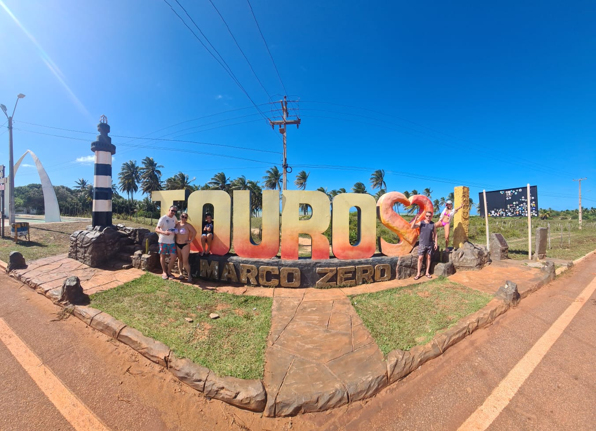
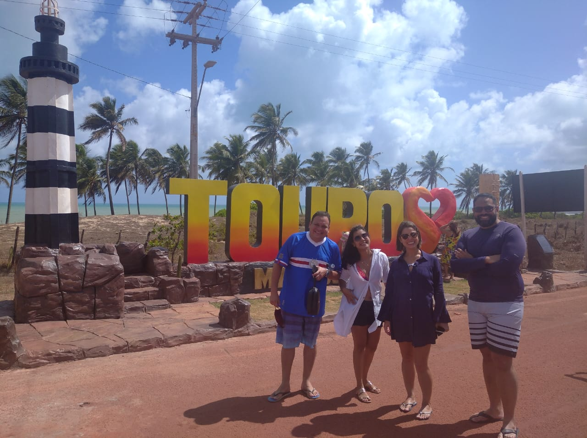
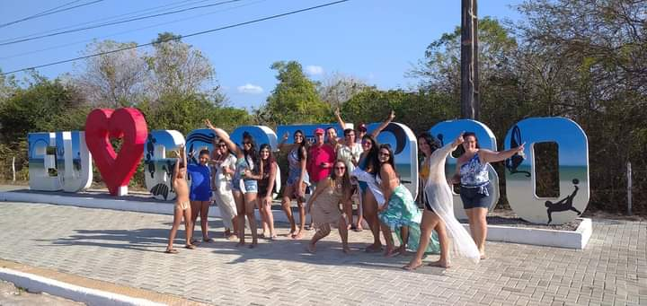
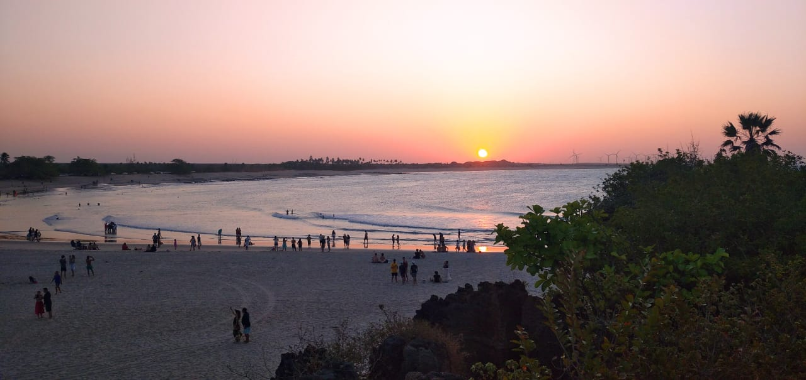

Passeio a São Miguel do Gostoso Localizado a aproximadamente 1h40min partindo de Natal, neste passeio você irá aproveitar as seguintes paradas: Marco zero, onde se inicia a BR 101, importante rodovia brasileira que liga o RN ao RS, com mais de 4.765 quilômetros de extensão, no local também existe um monumento projetado por Oscar Niemeyer e a placa de Touros. Em seguida, o passeio segue rumo à cachaçaria Urca do Tubarão, um espaço charmoso onde será realizado uma apresentação das cachaças da região. Logo depois, partiremos para a praia de São Miguel do Gostoso, uma praia com uma imensa faixa de areia, proporcionando um belo visual rústico. A praia está localizada na pousada Mar de Estrela, onde faremos também nossa parada para almoço. No mesmo local, será oferecido um passeio opcional de Jardineira. Onde você irá passar por outras praias até chegar na praia de Tourinhos, uma praia excelente para o banho de mar e com um dos pores do sol mais bonitos de todo o Rio Grande do Norte.



